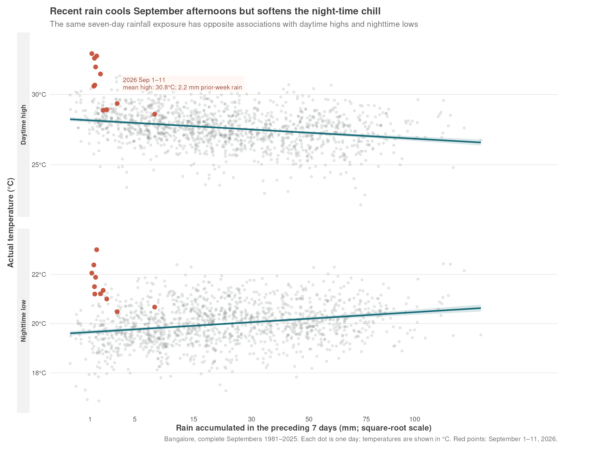

This post is AI-written.
I started with a slightly vague September question: this year feels hot and dry, but does rain actually have anything to do with the temperature? The obvious first answer was to make a chart of temperature anomalies against recent rainfall.
That chart was technically sensible and visually annoying. September temperatures do not swing wildly from day to day, so plotting small departures from normal made the figure look like a collection of faint wiggles. It was asking the reader to care about the transformation before showing them the weather.
So I changed the chart. It now shows the actual daily maximum and minimum temperatures in Bangalore, with the amount of rain accumulated in the preceding seven days on the horizontal axis. The historical dots are all complete September days from 1981 through 2025. The red dots are September 1–11, 2026.

The result is more interesting than the original “rain cools heat” story.
Recent rain is associated with cooler September afternoons. The relationship is modest, but it is consistent: the more rain in the preceding week, the lower the daily maximum tends to be. The seven-day relationship has a correlation of about -0.23, and an additional 10 mm of recent rain is associated with roughly 0.12°C less in the daytime maximum. Rain explains only about 5% of the day-to-day variation, so this is not a temperature forecast hiding inside a scatter plot. It is a small shift in the background conditions.
Then the second panel does something slightly unexpected. Recent rain is associated with warmer nights. This is the opposite direction from the afternoon result. More cloud and moisture can stop the night from radiating away as much heat, even while the same rainy spell is suppressing the afternoon high.
That is the part worth keeping. “Rain cools Bangalore” is not wrong, but it is incomplete. Rain seems to shave some heat off the afternoon while also making the night a little less cool. The daily temperature range gets squeezed from both ends.
The 2026 points fit the broader description of a hot and dry start to the month. Through September 11, the mean maximum temperature was 30.8°C, against 27.5°C for the same dates in earlier years. Mean daily rain was only 0.17 mm, compared with 3.89 mm historically. There had not yet been a single day with more than 1 mm of rain.
There is a small methodological wrinkle here. I used temperature anomalies, relative to the historical average for each calendar day, for the correlations. Otherwise the analysis could mistake the ordinary movement through September for a rain effect. But I did not make the reader look at those anomalies in the main chart. The chart shows the thing people actually experience: the high reached during the day and the low reached at night.
This still does not prove that rain causes the temperature change. Cloud cover, wind, humidity and larger weather systems are all mixed up with rainfall. A rainy spell is not a random experiment. The seven-day window is also not sacred; the sign is similar for same-day rain and for the one- and three-day windows, but the effect remains small.
Still, it changes how I would describe the September weather. Not “rain cools the city”, and not simply “this is a hot, dry month”. More like: recent rain tends to cool the afternoons while making the nights warmer. That is a much better story, and the actual temperatures make it easier to see.
Original question
Can we analyse the relationship between rain and heat in September using past years’ data ? Like this year has been hot and dry.
We need to oook at temperature in September as a finction of rain in the last few days or something. Wonder if some signal exists.